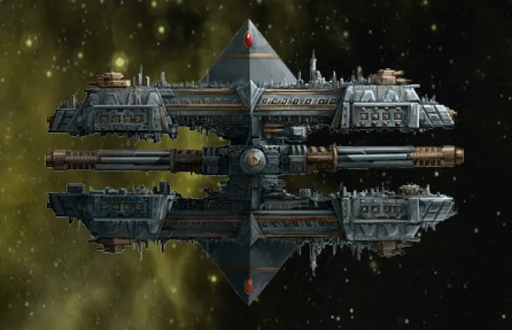
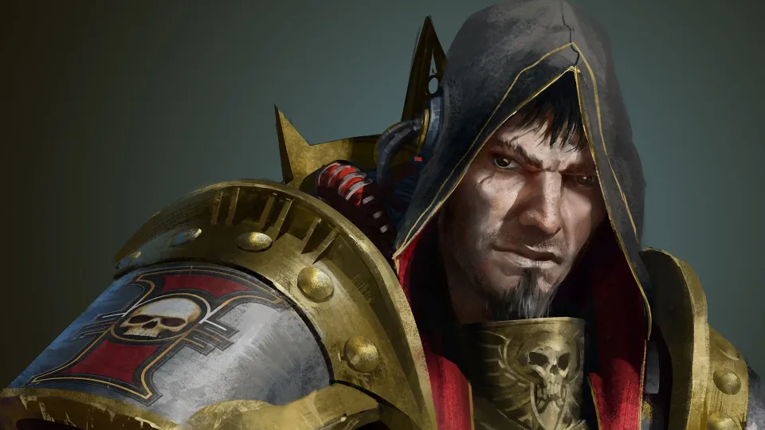
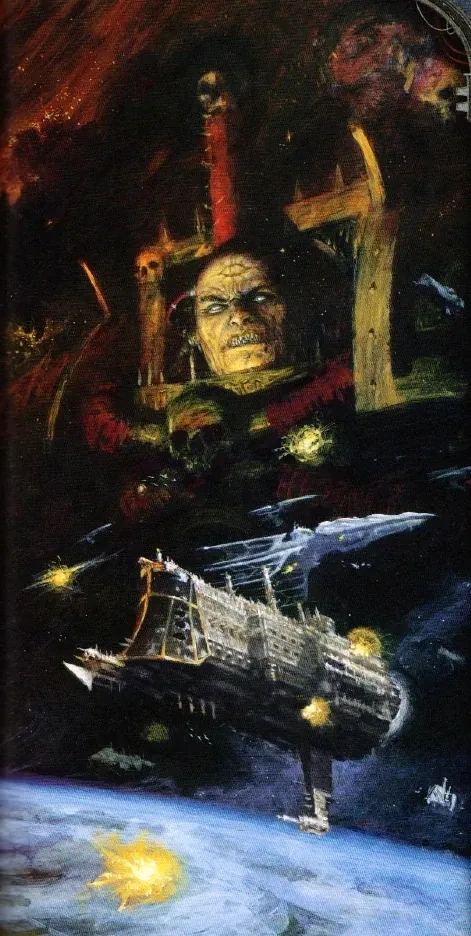
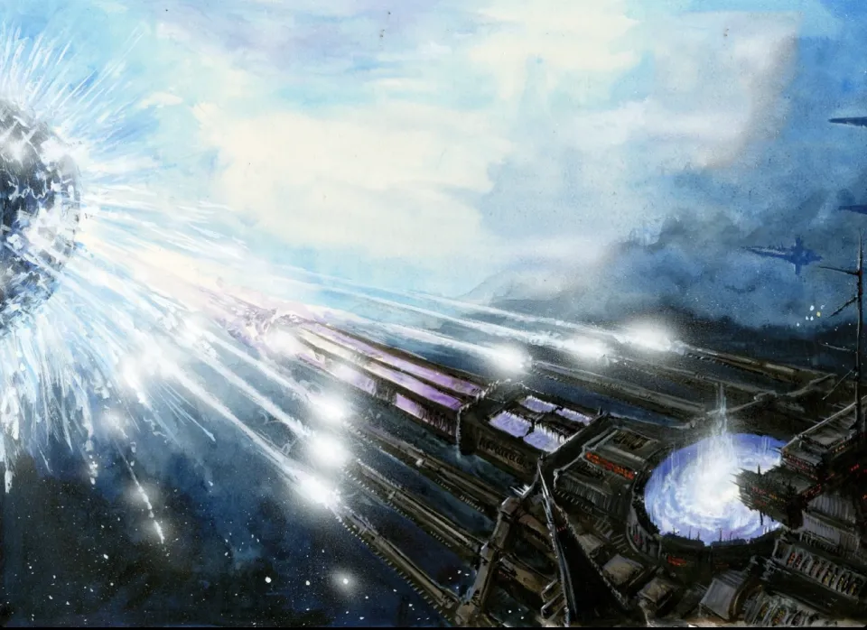
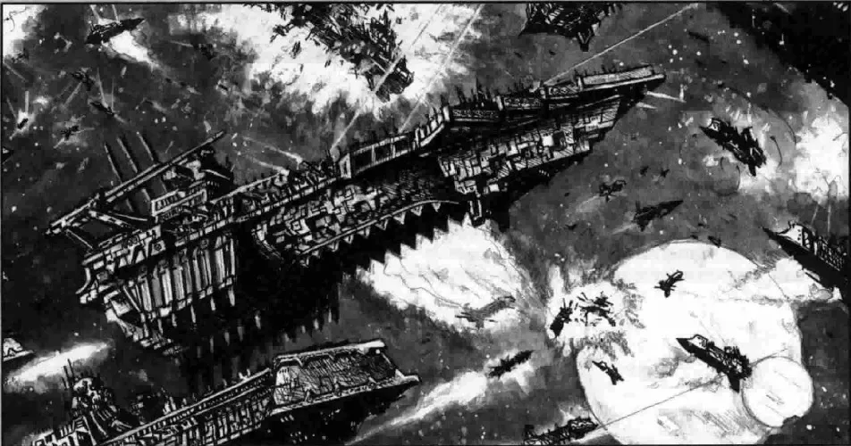
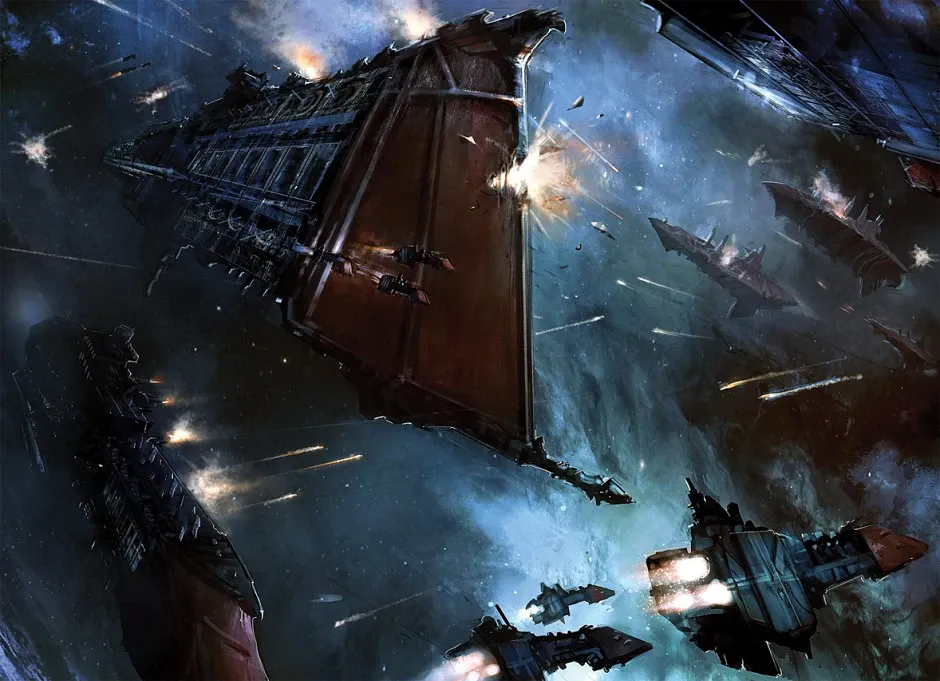
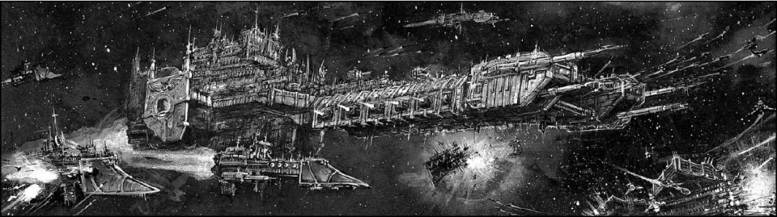

01ภาพรวม
Gothic War (โกธิค วอร์) คือ Black Crusade ครั้งที่ 12 ของ Abaddon the Despoiler อดีต First Captain ของ Horus ที่รวม Chaos ทุกฝ่ายภายใต้ธงเดียว (Chaos Undivided) บุกออกจาก Eye of Terror สงครามนี้ต่างจาก Black Crusade ครั้งอื่นเพราะเป็นสงครามอวกาศเป็นหลัก — เป็นฉากของเกม Battlefleet Gothic และ Battlefleet Gothic: Armada
เป้าหมายแท้จริงของ Abaddon คือ Blackstone Fortress ป้อมปราการอวกาศขนาดยักษ์ที่สร้างโดยเผ่าต่างดาวที่ไม่มีใครรู้จักเมื่อหลายล้านปีก่อน จักรวรรดิพบมันในสหัสวรรษที่ 32 และใช้เป็นฐานทัพเรือ 6 แห่งใน Gothic Sector โดยไม่รู้เลยว่ามันคืออาวุธที่ทรงพลังที่สุดในกาแล็กซี

02ลางร้าย (139–142.M41)
สถานีเฝ้าระวังของจักรวรรดิรอบ Eye of Terror ถูกโจมตีบ่อยขึ้นผิดปกติ เรือรบถูกพบลอยเคว้งพร้อมลูกเรือที่ตายด้วยโรคระบาด Inquisitor Horst สงสัยว่ามีแผนใหญ่ และพบว่าศัตรูกำลังตามหาวัตถุโบราณสองชิ้น — Hand of Darkness และ Eye of Night ซึ่งในตำนานต่างดาวคือกุญแจควบคุม Blackstone Fortress
Abaddon รู้ความลับนี้จาก Moriana หญิงชราผู้เคยใกล้ชิดจักรพรรดิในยุค Great Crusade และเป็นพันธมิตรของผู้ก่อตั้ง Inquisition ก่อนจะหลงผิดตลอดหลายพันปี ในปี 142.M41 คลื่นกระแทกใน Warp ทำให้พายุ Warp ห่อหุ้ม Gothic Sector ทั้งภาค ตัดขาดจากจักรวรรดิเกือบสิบปี

03ลำดับการรบ
การโจมตีครั้งแรก
กองเรือ Chaos หลายสิบกองโจมตีฐานทัพเรือ 12 แห่งพร้อมกัน เรือรบจำนวนมากถูกทำลายขณะจอดซ่อม อู่ต่อเรือถูกยึดไปใช้ มีเพียงการป้องกันดาว Orar ที่ฝ่ายจักรวรรดิได้ชัย
Blackstone IV ล่ม
เมื่อกองเรือของ Abaddon เข้าใกล้ ระบบพลังงานของ Blackstone IV ดับสนิทเอง ปืนยิงไม่ได้ ประตูเปิดไม่ได้ ฐานถูกยึดโดยแทบไม่มีการต่อสู้ — Fortress "รู้จัก" ผู้ถือกุญแจ
Planet Killer
เรือรบใหม่ของ Abaddon ที่เรียกว่า Planet Killer ยิงอาวุธ Armageddon Gun ใส่ดาว Savaven ซึ่งเป็นดาวศักดิ์สิทธิ์ของ Ecclesiarchy จนดาวแตกออกจากภายใน ดาวหลายดวงยอมแพ้ทันทีเมื่อเห็นเรือลำนี้
Blackstone ถูกยึดเพิ่ม
Abaddon ยึด Blackstone Fortress เพิ่ม และที่ระบบ Fularis Fortress สองแห่งรวมพลังยิงทำลายอีกแห่งหนึ่ง ทั้งจักรวรรดิเพิ่งรู้ว่ามันคืออาวุธ
ห้าปีแห่งการรบ
กองเรือทั้งสองฝ่ายปะทะกันทั่วภาค ดาวถูกยึดและยึดคืน โจรสลัดมนุษย์ Ork และ Aeldari ฉวยโอกาสปล้นสะดม คนตายหลายสิบล้านจากโรคและความอดอยาก
ศึก Gethsemane
Lord Admiral Ravensburg เปลี่ยนจากตั้งรับเป็นบุก ไล่ตามกองเรือ Chaos เข้ากับดัก แต่พลิกกลับมาทำลายศัตรูได้ ระหว่างการรบ กองเรือ Aeldari ปรากฏตัวและช่วยโจมตี Chaos — เชื่อกันว่า Aeldari ตระหนักว่าการที่ Abaddon ได้ Blackstone ไปเป็นภัยต่อพวกเขาเช่นกัน
กำลังเสริมมาถึง
พายุ Warp สงบลง กองเรือจากภาคอื่นและ Space Marine หลาย Chapter มาสมทบ
ดวงอาทิตย์ถูกจุดระเบิด
Blackstone Fortress ของ Abaddon ยิงพลังงานใส่ดาวฤกษ์ Tarantis หนึ่งเดือนต่อมาดาวฤกษ์ระเบิดเป็นโนวา ทำลายทุกสิ่งในระบบ
Abaddon ถอย
ฝ่ายจักรวรรดิและ Aeldari ดักกองเรือของ Abaddon ไว้ได้ การรบสามวันทำให้ Fortress หมดพลัง Abaddon หนีเข้า Warp พร้อม Fortress สองแห่ง แห่งที่สามถูก Angels of Redemption บุกขึ้นไป และไม่นานมันก็ทำลายตัวเอง — Fortress อื่น ๆ ทั่วภาคก็ระเบิดตัวเองตามไปด้วย
กวาดล้างที่เหลือ
ใช้เวลาอีกแปดปีในการยึดดาวที่ถูกยึดคืนและกวาดล้างโจรสลัด





04ผลที่ตามมา
- ความลับของ Blackstone — จักรวรรดิรู้แล้วว่า Fortress เป็นอาวุธต่างดาวที่ยิงทำลายดาวฤกษ์ได้ และดูเหมือน "ไม่ชอบ" ถูก Chaos ควบคุม แต่ไม่เคยรู้ว่าใครสร้าง (ทฤษฎีหนึ่งคือ Old Ones สร้างเพื่อสู้กับ C'tan)
- Abaddon ไม่ได้แพ้จริง — Fortress สองแห่งที่เขาพาหนีไปถูกเก็บไว้กว่า 800 ปี ก่อนที่แห่งหนึ่งชื่อ Will of Eternity จะถูกพุ่งชนดาว Cadia ใน Black Crusade ครั้งที่ 13 (ดู Cadia ล่มสลาย)
- Planet Killer — เรือลำนี้ถูกนำกลับมาใช้อีกครั้งในการบุก Cadia
- ราคาของชัยชนะ — Battlefleet Gothic สูญเสียเรือและลูกเรือมหาศาล แต่ถือเป็นหนึ่งในชัยชนะทางเรือที่ยิ่งใหญ่ที่สุดของจักรวรรดิ
05แหล่งข้อมูลและหมายเหตุ
เนื้อหาหน้านี้สรุปและแปลเป็นภาษาไทยจากบทความใน Warhammer 40k Wiki (Fandom) ซึ่งเรียบเรียงจากหนังสือ Codex, หนังสือชุด Horus Heresy ของ Forge World และนิยาย Black Library ด้านล่างนี้ (ตรวจสอบ ต.ค. 2026)
เนื้อเรื่อง Warhammer ถูกเขียนเพิ่มและแก้ไขมาตลอดหลายสิบปี ปี จำนวน และรายละเอียดบางจุดต่างกันไปตามหนังสือแต่ละเล่ม หน้านี้ใช้ฉบับที่แหล่งอ้างอิงส่วนใหญ่ยอมรับ และบอกไว้เมื่อมีหลายฉบับ